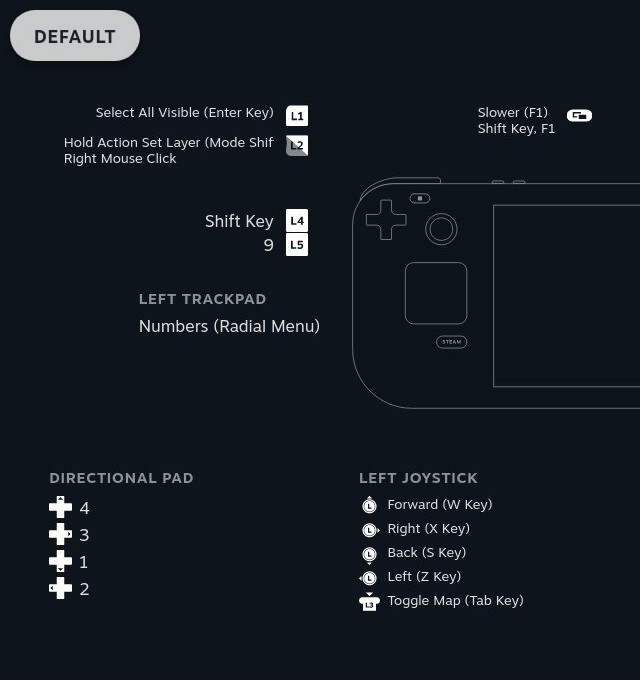
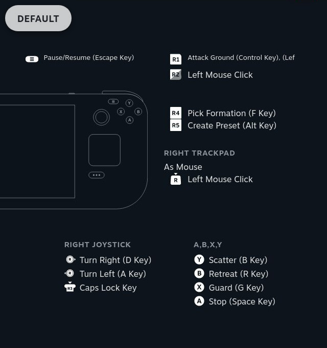

Basics¶
The Big Picture¶
So first off, if you just want a look at all the bindings in the config, here ya go. These are left-side and right-side diagrams; if your monitor is big enough you can widen your browser window and see the diagrams side-by-side.
 Those images start off showing the default control set. As described below, there’s an alternate set of controls you can access in a “mode shift”. So if you click on either image above, they will switch to showing those alternate controls (any controls that don’t change are dimmed out). Click again to toggle back to viewing the default controls.
Conventions¶
Here’s a few conventions used when controls are represented in the following pages. BTW these nice public domain controller-button icons are from Nicolae Berbece and Paul Paun, thanks!
“
” will be used whenever a left mouseclick action is needed. You can also always click the right trackpad to do this action, but to keep things streamlined I’ll stop mentioning that alternative once we get really deep into the controls description.
“
while touching
” indicates pulling the left trigger while your thumb is still resting on the right trackpad. This is a right mouseclick action as far as Myth is concerned.
“
<some other button>” indicates holding the left trigger while you are not touching the right trackpad, and pressing <some other button>. This a case of using the “mode shift” mentioned above. Release <some other button> before (or at the same time as) you release the left trigger.
And other button combos do exist besides the left-trigger stuff. “<some button> + <some other button>” indicates holding <some button> then pressing <some other button>.
“<some button> + <some other button> + <yet another button>” will show up in a few cases where you can use a button combo while mode-shifted. This means that <some button> and <some other button> should be held down then pressing <yet another button>. The order in which you begin holding <some button> and <some other button> does not matter.
Another thing to note about the following pages is that they cover all of the Myth control behaviors instead of just saying what the MythDeck bindings are. For example rather than just saying that L4 is the shift key, these pages describe how you use L4 for various selection and move orders. That makes for more text, but hopefully it’s more useful that way.
The Essentials¶
The following pages in this Deck Config section will talk about which controls are used for which tasks. In each page the controls will be divided into Main Controls that you will use a lot, and Other Controls that you might rarely if ever use.
But FYI the most essential controls are these:
to move the in-game camera (view) forward/back and left/right.
to turn the camera left and right.
to bring up or dismiss the pause menu in-game.